TERMINOLOGIA EN ESPAÑOL Y INGLES
Terminos español/ ingles
ESPAÑOL
INGLES
IMAGENES
CARACTER
CHARACTER
Un carácter es una unidad de información corresponde
aproximadamente con un grafema o con una unidad
o símbolo parecido, como los de un alfabeto o silabario.
A character is a unit of information that corresponds
approximately to a grapheme or a similar unit or symbol,
such as those of an alphabet or syllabary.
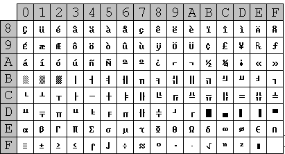
BYTE
BYTE
Es una unidad de información estándar utilizada en informática
y en telecomunicaciones. Equivale a 8 bits.
It is a standard information unit used in computing and
telecommunications. Equals 8 bits.
BYT
BYT
Es una subdivision de información de 8 bits.Un bit es un dígito
del sistema de numeración binario, de representa con dos valores,
el 0 y el 1 en informática.
It is a 8-bit subdivision of information.A bit is a digit of the binary
number system, which is represented by two values, 0 and 1. In computing
KILOBYTE
KILOBYTE
Es una unidad debialta de 1024 bits.Es una unidad de almacenamiento de
información cuyo símbolo es el KB y equivale a 10 mil bytes.
It is a 1024-bit unit of information.A kilobyte is a unit of information
storage whose symbol is the KB and is equivalent to 10 thousand bytes.
PROGRAMAS
PROGRAMS
Es una secuencia de instrucciones u órdenes basados en un lenguaje de
programación que una computadora interpreta para resolver un problema
Is a sequence of instructions or commands based on a programming language
that a computer interprets to solve a problem.
SOFTWARE
SOFTWARE
Estos hacen posible la ejecución de tareas específicas dentro de un computador.
These are computer programs that make it possible to execute specific tasks within a
computer.
WEB
WEB
Es un Sistema que funciona a través de internet, por la cual se pueden transmitir
diversos tipos de datos.
It is a system that works through the internet, through which various
types of data can be transmitted.
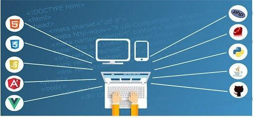
INTERNET
INTERNET
Red de computadoras interconectadas entre sí a nivel mundial con el
objetivo de hacer común información del acceso público.
network of computers interconnected worldwide with the aim of
making common information publicly accessible

CODIGOS
CODES
Líneas de texto que expresan, un lenguaje de programación determinado, los pasos
que debe seguir el computador para la correcta ejecución de un programa específico. }
Lines of text that express, in a specific programming language, the steps that
the computer must follow for the correct execution of a program
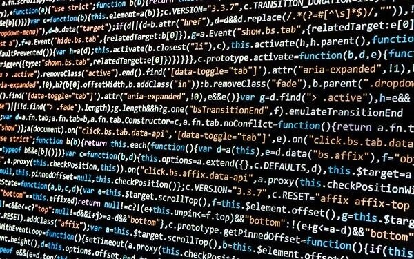
SALIDA
EXIT
En la interacción de ordenador información producida por el programa
del ordenador y percibida por el usuario
In human computer interaction, the output is the information produced
by the computer program and perceived by the user
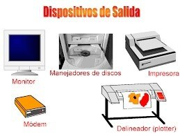
FLUJOGRAMA
FLOWCHART
Un diagrama de flujo es un diagrama que describe un proceso, sistema o
algoritmo informático
A flowchart is a diagram that describes a computer process, system,
or algorithm.
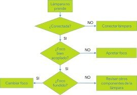
PSEUDOCÓDIGO
PSEUDOCODE
El pseudocódigo es una forma de representar código, como algoritmos,
funciones y otros procesos, utilizando una combinación de lenguaje natural
y elementos similares al lenguaje de programación.
Is a way of representing code, such as algorithms, functions, and other processes,
using a combination of natural language and programming language like elements.
ARCHIVOS
FILES
Es un contenedor de información. Contienen información en un formato determinado.
It is a container of information . contain information in a certain format.
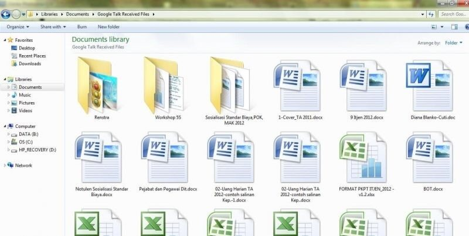
TÉCNICO
TECHNICAL
Estudio que realiza un área o entidad donde define y emite concepto de
acuerdo a su competencia.
Study carried out by an area or entity where it defines and issues a
concept according to its competence

SERVIDOR
SERVER
Es un Sistema que proporciona recursos, datos, servicios o programas
a otros ordenadores, conocidos com. clientes, a través de una red
Is a system that provides resources, data, services or programs to other
computers, known as clients, over a network.
TABLAS
BOARDS
Objetos con bases de datos que contienen todos sus datos.
Objects with databases containing all their data.
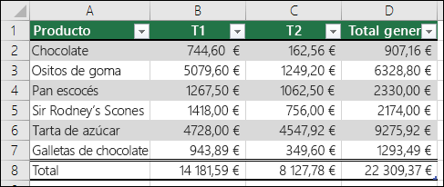
PUBLICAR
POST
Diseñar las páginas web de nuestro sitio web en el disco duro del
equipo para luego enviarlos al servidor.
Desing the web pages of our website om the computer’s hard drive
and then send them to the server.
NAVEGAR
BROWSE
Buscar recursos en internet, como en las distintas páginas que
comparten un sitio web.
Search for resources on the internet such as the different pages that
DOMINIO
DOMAIN
Parte principal de una dirección web que indica la organización o compañía
que administra el sitio web o página en cuestión.
Main part of a web address that indicates the organization or company
that operates the website or page in question.
CUENTA
ACCOUNT
Combinación de un inicio de sesión y una contraseña necesarios
para autenticar.
Combination of a login and password required to authenticate.

USUARIO
USER
Usuario de internet que llega al sitio web móvil.
Internet user coming to mobile website.
NUBE
CLOUD
Es el uso de una red de servidores remotos conectados a internet
para almacenar, administrar y procesar datos, servidores y bases de datos.
It is the use of a network of remote servers connected to the internet
to store, manage and process data
CARPETA
FOLDERS
Contenedor donde se pueden almacenar archivos o también otras carpetas.
Container, where can files or other folders be stored.
HOJAS DE CÁLCULO
SPREADSHEET
Una hoja de cálculo es un tipo de documento que permite manipular datos
numéricos y alfanuméricos dispuestos en formas de tablas compuestas por celdas.
A spreadsheet is a type of document that allows you to manipulate numerical and
alphanumeric data arranged in the form of tables composed pf cells.

MODEMS
MODEMS
Es un dispositivo que convierte las señales digitales en analógicas y viceversa,
permite así la comunicación entre computadoras a través de la línea telefónica.
It is a device that converts digital signals into analog signals and vice versa,
thus allowing communication
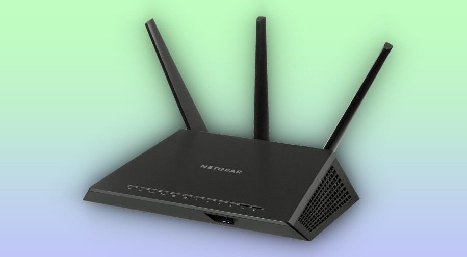
ALGORITMO
ALGORITHM
Conjunto ordenado y finito de operaciones que permite hallar la solución de un problema.
Ordered and finite set of operations that allows finding the solution to a problem.
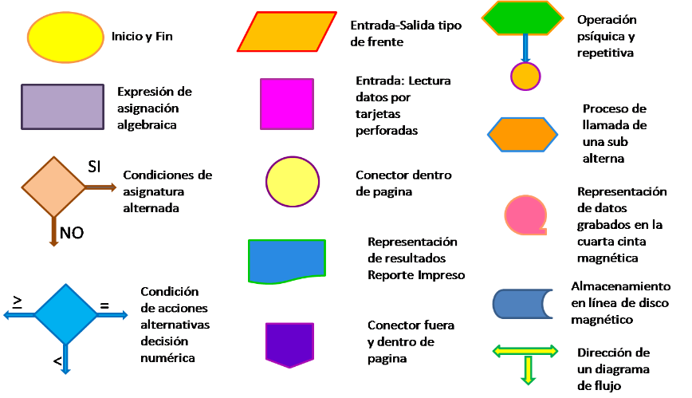
LINK
LINK
También conocido como enlace o vínculo, es una referencia unidireccional en un
documento electrónico que entrelaza diferentes documentos, o secciones entre si.
Also known as a link or link, is a one-way reference in an electronic document
that links different documents that interweave different documents or sections together
MEMORIA
MEMORY
Se almacenan temporalmente tanto los datos como los programas que la unidad central
de procesamiento está procesando o va a procesar en un determinado momento
Both the data and the programs that the central processing unit is processing
or will process at a given time are temporarily stored.
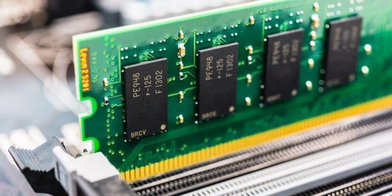
PROTOCOLO
PROTOCOL
Es un sistema de reglas que permiten que dos o mas entidades de un sistema
de comunicación se comuniquen entre ellas para transmitir información
It is a system of rules that allow two or more entities in a communication
system to communicate with each other to transmit information.
| Terminos español/ ingles | ESPAÑOL | INGLES | IMAGENES |
| CARACTER CHARACTER | Un carácter es una unidad de información corresponde aproximadamente con un grafema o con una unidad o símbolo parecido, como los de un alfabeto o silabario. | A character is a unit of information that corresponds approximately to a grapheme or a similar unit or symbol, such as those of an alphabet or syllabary. | 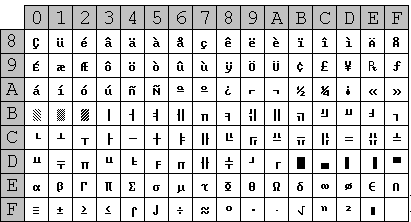 |
| BYTE BYTE | Es una unidad de información estándar utilizada en informática y en telecomunicaciones. Equivale a 8 bits. | It is a standard information unit used in computing and telecommunications. Equals 8 bits. | |
| BYT BYT | Es una subdivision de información de 8 bits.Un bit es un dígito del sistema de numeración binario, de representa con dos valores, el 0 y el 1 en informática. | It is a 8-bit subdivision of information.A bit is a digit of the binary number system, which is represented by two values, 0 and 1. In computing | |
| KILOBYTE KILOBYTE | Es una unidad debialta de 1024 bits.Es una unidad de almacenamiento de información cuyo símbolo es el KB y equivale a 10 mil bytes. | It is a 1024-bit unit of information.A kilobyte is a unit of information storage whose symbol is the KB and is equivalent to 10 thousand bytes. | |
| PROGRAMAS PROGRAMS | Es una secuencia de instrucciones u órdenes basados en un lenguaje de programación que una computadora interpreta para resolver un problema | Is a sequence of instructions or commands based on a programming language that a computer interprets to solve a problem. | |
| SOFTWARE SOFTWARE | Estos hacen posible la ejecución de tareas específicas dentro de un computador. | These are computer programs that make it possible to execute specific tasks within a computer. | |
| WEB WEB | Es un Sistema que funciona a través de internet, por la cual se pueden transmitir diversos tipos de datos. | It is a system that works through the internet, through which various types of data can be transmitted. | 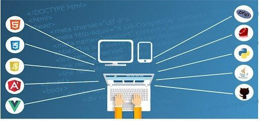 |
| INTERNET INTERNET | Red de computadoras interconectadas entre sí a nivel mundial con el objetivo de hacer común información del acceso público. | network of computers interconnected worldwide with the aim of making common information publicly accessible | |
| CODIGOS CODES | Líneas de texto que expresan, un lenguaje de programación determinado, los pasos que debe seguir el computador para la correcta ejecución de un programa específico. | }Lines of text that express, in a specific programming language, the steps that the computer must follow for the correct execution of a program | 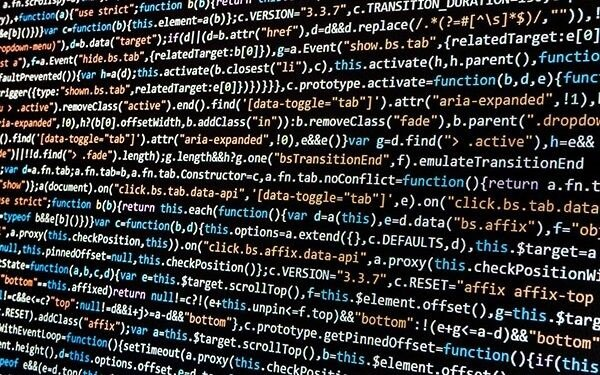 |
| SALIDA EXIT | En la interacción de ordenador información producida por el programa del ordenador y percibida por el usuario | In human computer interaction, the output is the information produced by the computer program and perceived by the user | 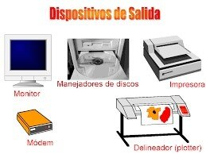 |
| FLUJOGRAMA FLOWCHART | Un diagrama de flujo es un diagrama que describe un proceso, sistema o algoritmo informático | A flowchart is a diagram that describes a computer process, system, or algorithm. | 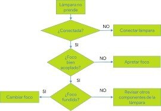 |
| PSEUDOCÓDIGO PSEUDOCODE | El pseudocódigo es una forma de representar código, como algoritmos, funciones y otros procesos, utilizando una combinación de lenguaje natural y elementos similares al lenguaje de programación. | Is a way of representing code, such as algorithms, functions, and other processes, using a combination of natural language and programming language like elements. | |
| ARCHIVOS FILES | Es un contenedor de información. Contienen información en un formato determinado. | It is a container of information . contain information in a certain format. | 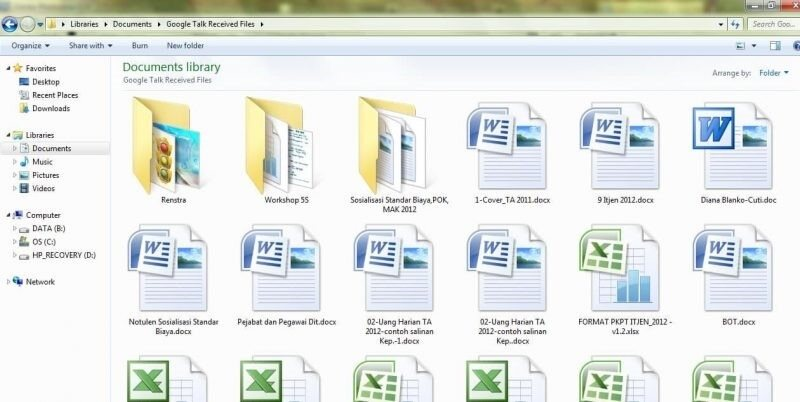 |
| TÉCNICO TECHNICAL | Estudio que realiza un área o entidad donde define y emite concepto de acuerdo a su competencia. | Study carried out by an area or entity where it defines and issues a concept according to its competence | |
| SERVIDOR SERVER | Es un Sistema que proporciona recursos, datos, servicios o programas a otros ordenadores, conocidos com. clientes, a través de una red | Is a system that provides resources, data, services or programs to other computers, known as clients, over a network. | |
| TABLAS BOARDS | Objetos con bases de datos que contienen todos sus datos. | Objects with databases containing all their data. | 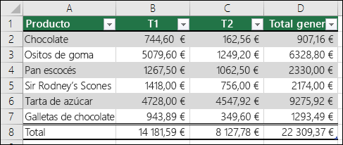 |
| PUBLICAR POST | Diseñar las páginas web de nuestro sitio web en el disco duro del equipo para luego enviarlos al servidor. | Desing the web pages of our website om the computer’s hard drive and then send them to the server. | |
| NAVEGAR BROWSE | Buscar recursos en internet, como en las distintas páginas que comparten un sitio web. | Search for resources on the internet such as the different pages that | |
| DOMINIO DOMAIN | Parte principal de una dirección web que indica la organización o compañía que administra el sitio web o página en cuestión. | Main part of a web address that indicates the organization or company that operates the website or page in question. | |
| CUENTA ACCOUNT | Combinación de un inicio de sesión y una contraseña necesarios para autenticar. | Combination of a login and password required to authenticate. | |
| USUARIO USER | Usuario de internet que llega al sitio web móvil. | Internet user coming to mobile website. | |
| NUBE CLOUD | Es el uso de una red de servidores remotos conectados a internet para almacenar, administrar y procesar datos, servidores y bases de datos. | It is the use of a network of remote servers connected to the internet to store, manage and process data | |
| CARPETA FOLDERS | Contenedor donde se pueden almacenar archivos o también otras carpetas. | Container, where can files or other folders be stored. | |
| HOJAS DE CÁLCULO SPREADSHEET | Una hoja de cálculo es un tipo de documento que permite manipular datos numéricos y alfanuméricos dispuestos en formas de tablas compuestas por celdas. | A spreadsheet is a type of document that allows you to manipulate numerical and alphanumeric data arranged in the form of tables composed pf cells. | |
| MODEMS MODEMS | Es un dispositivo que convierte las señales digitales en analógicas y viceversa, permite así la comunicación entre computadoras a través de la línea telefónica. | It is a device that converts digital signals into analog signals and vice versa, thus allowing communication | 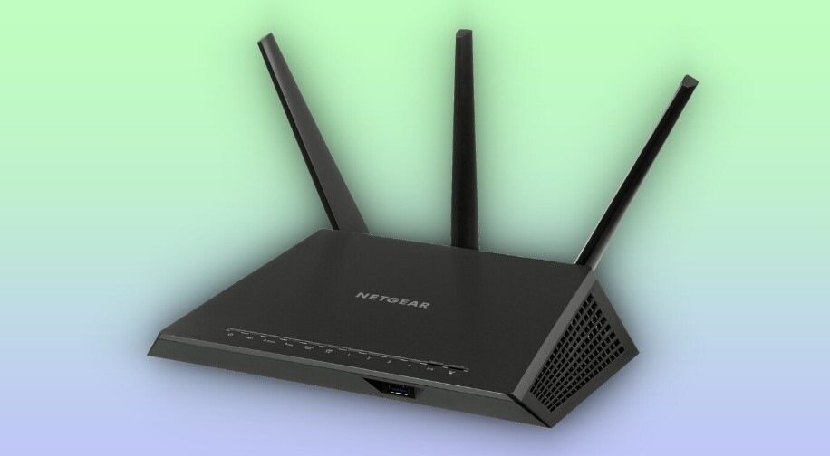 |
| ALGORITMO ALGORITHM | Conjunto ordenado y finito de operaciones que permite hallar la solución de un problema. | Ordered and finite set of operations that allows finding the solution to a problem. | 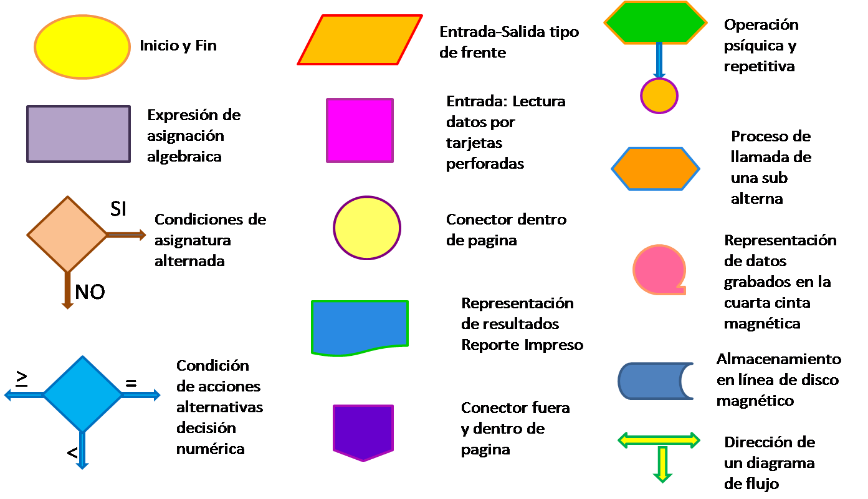 |
| LINK LINK | También conocido como enlace o vínculo, es una referencia unidireccional en un documento electrónico que entrelaza diferentes documentos, o secciones entre si. | Also known as a link or link, is a one-way reference in an electronic document that links different documents that interweave different documents or sections together | |
| MEMORIA MEMORY | Se almacenan temporalmente tanto los datos como los programas que la unidad central de procesamiento está procesando o va a procesar en un determinado momento | Both the data and the programs that the central processing unit is processing or will process at a given time are temporarily stored. | 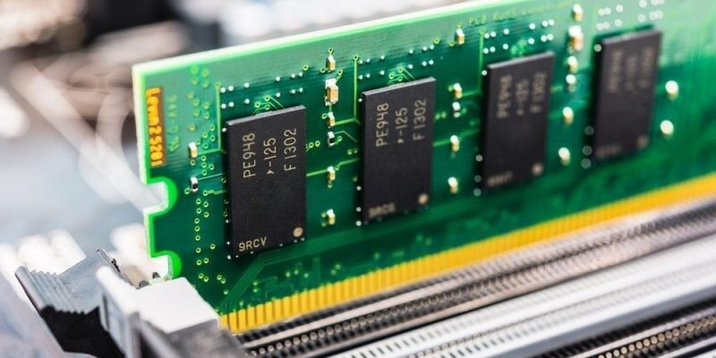 |
| PROTOCOLO PROTOCOL | Es un sistema de reglas que permiten que dos o mas entidades de un sistema de comunicación se comuniquen entre ellas para transmitir información | It is a system of rules that allow two or more entities in a communication system to communicate with each other to transmit information. | g"width="200" height="200"> |